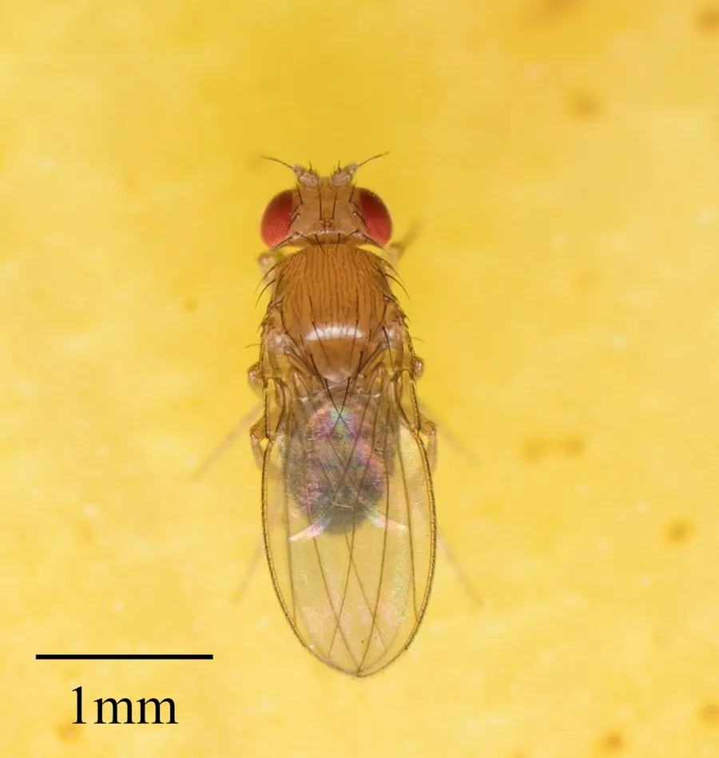

昆虫 · 动物界
果蝇 Drosophila melanogaster

生物学研究中的模式生物，体长约 3 毫米、复眼红色，繁殖周期短，全球广泛分布，与人类活动密切相关。
- 分类
- 门节肢动物门纲昆虫纲目双翅目科果蝇科属果蝇属
- 栖息环境
- 果园、厨房、垃圾堆等有发酵水果和酵母的场所
- 地理分布
- 全球分布，随人类活动扩散到各大洲
- 保护级别
- 暂无评估
物种志
果蝇成虫体长仅约 3 毫米，体色为黄褐色至黑褐色。它的复眼大而呈红色，胸部有刚毛，前翅透明，翅膀平放于背部；腹部有黑色横纹，雄虫腹部末端颜色较深，体型略小于雌虫。
果蝇是全球广泛分布的小型蝇类，常见于果园、厨房、市场和垃圾堆附近，以发酵水果、果汁和酵母为食。它的生活史很短：卵一天左右孵化，幼虫经两次蜕皮后化蛹，大约 10 天即可完成一代，一年可繁殖数十代。果蝇的唾腺染色体大而清晰，遗传背景清楚，自 20 世纪初起成为遗传学、发育生物学的重要模式生物，科学家借此发现了大量基因规律。它也是果蝇属中分布最广的物种之一。
形态与习性
- 食性发酵水果、果汁与酵母
- 体长成虫约 3 mm
- 生活史约 10 天完成一代，一年可繁殖数十代
- 繁殖雌虫可产数百枚卵
- 科研价值遗传学与发育生物学的经典模式生物
- 识别复眼红色，腹部有黑色横纹
趣味知识
- 果蝇约 10 天就能完成一代，一年可繁殖数十代。
- 它的唾腺染色体大而清晰，是遗传学研究的经典材料。
- 果蝇复眼呈红色，是遗传实验中常用的标记性状。
- 自 20 世纪初起，果蝇就成为重要的模式生物。